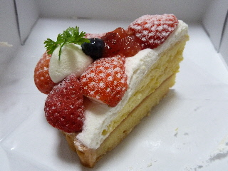
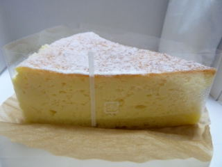
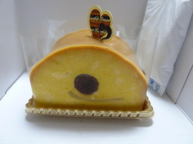
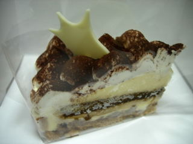
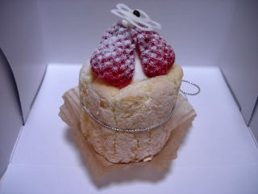
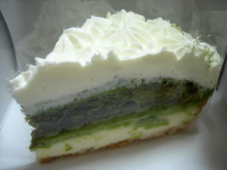
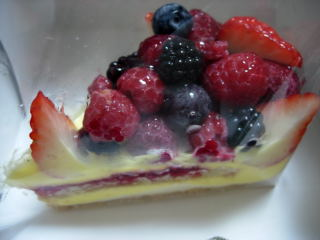
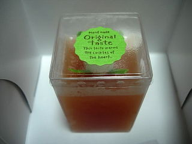
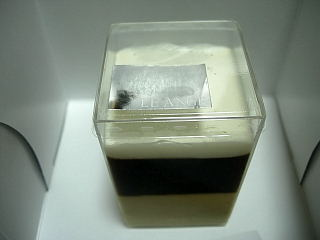

ルアンジェの苺タルト
2012/03/16
やわらかい苺タルトでした。

イチゴもクリームも甘さが控えめ、カスタードクリームも少な目で、上品なお味でした。
タルトがやわらかめなので、少し苺ショートみたいな感じがしました。
島根県出雲市塩冶神前2-7-8
2012/03/16
やわらかい苺タルトでした。

イチゴもクリームも甘さが控えめ、カスタードクリームも少な目で、上品なお味でした。
タルトがやわらかめなので、少し苺ショートみたいな感じがしました。
2010/11/14
しっとりとしたスフレチーズが沢山ありますね。

味が濃くて、チーズの味も甘さもバッチリでした。
個人的にこの商品は大好きです。

これはカボチャ系のケーキです。これもしっとりとした甘いケーキでした。
和風で、アンコとギュウヒが入っていました。ちょっと渋めな味でした。
２個共美味しかったです。
2010/4/4
クリームが沢山乗ったタルトのティラミスです。

ココアの甘さとほろ苦さがちょっと濃い目で美味しかったです。
もうちょっとチーズ味が欲しいかな？とも思いました。
ティラミスなので、ちょっと胃に重かったです。
苺のシャルロットです。

中に苺のクリームが入っていたんですが、苺の酸味が効いてて爽やかで美味しかったです。
2010/3/28
抹茶が濃い目のチーズタルトでした。

写真がちょっと暗いですが、なんか抹茶が濃そうでしょ。味が濃くて、苦味が少しありました。渋めの味ですね。
最近爽やか系の抹茶味が多いので、久々に濃い系の抹茶味の商品を食べた気がしました。
よそのお店とは違った感じでいいですね。
こっちはベリーのタルトです。

甘ずっぱい果物と甘いクリームで美味しかったです。王道な味ですね。
これくらい果物が沢山乗っているとうれしいですね。
2009/8/30
野菜スイーツですね。

トマトの甘くておいしいところがゼリーになった感じでした。「トマトの味そのままだ！」って思いました。変に余計な味が付いてないので食べやすいですね。
私はトマトが好きなのでいいんですが、嫌いな人はどうだろう？って思いました。
こっちはコーヒーゼリーです。

コーヒーの苦味が濃く、美味しかったです。大人な味ですね。
2006/10/7
これはカットケーキタイプの物じゃなくて、丸い容器に入ったスフレチーズケーキです。
容器に入ってるので、表面はハードですが中のスフレ部分はしっとりふわふわで、口当たりがとってもいいです。ほどよく甘く、しっとりしたスフレはかなり美味しかったです。
このケーキはケーキ2個分くらいの大きさなので、大量のしっとりスフレが楽しめるので幸せな気分です。いっぱい食べたい時には最強なアイテムですね。
でも1個分の大きさだったら、普段から買い易くてもっといいんですけどね。
2006/5/7
GW最終日ですが、この連休は遠くに行ったりしないで地味に暮らしていたので、今日は贅沢に一個400円のケーキです。
ミルフィーユは、甘いクリームと柔らかいパイ生地がよくマッチしてて、ちゃんと美味しいケーキでした。
苺に甘いクリームに美味しい生地と、大道な味ですね。
ハニービーはケーキの上に小さな薔薇の生花が乗ってて、見た目ちょっと豪華でした。一目見て、これは食べてみなければって思いました。
ハニービーなので蜂蜜味のケーキで、ドライフルーツ、ナッツ、クリームが入ったフルーツケーキっぽい商品でした。全体的に蜂蜜甘いうえに、いろんな甘い味が追加されるので、複雑な味わいです。
私にはちょっとヘビーでした。
2006/3/17
白桃のタルトとオレンジのタルトを食べました。
タルトの部分の味が一番印象に残ったんですけど、しっとりとしたタルトがものすごく甘かったです。
バターと砂糖がたっぷり使ってある感じです。濃くて激甘です。
フルーツは苦味との雑味がなく、素直な素材の味がしてスッキリした味でした。
フルーツは上品な感じですね。
2005/7/10
また、出雲市塩冶町のスイーツ・カフェ「ル・アンジェ」にケーキを買いに行きました。前回はオープンした翌日に行ったので、ほぼ１月ぶりです。
今回はザッハトルテ、スフレチーズケーキと苺ショートを選んで食べました。
食べた感想ですが、勝手に順位をつけてみました。
1位ザッハトルテ 380円
渋みがあって味わい深いチョコが大量に使ってあって、満足満腹でした。
（個人的にはもうチョット小さくて安いといいかな。）
2位スフレチーズ 330円
とってもオーソドックスでおいしかったです。チーズスフレって言えばこうだよね、って感じです。
3位苺ショート 400円
超ふんわりしたケーキで、スポンジだけじゃなくクリームまでふんわりです。新食感でした。（個人的には、苺とクリームがもうチョット甘いとうれしいです。）
まだオープンして１月のお店なので、味や種類が変わる事があるかもしれないですが、いい方向（個人的に）に変わるとうれしいです。
まぁ味覚は人それぞれですから、色んなタイプのお店があっていいのでこれはこれでいいんですけど．．．。
また次に期待します。
2005/6/11
ル・アンジェのケーキ
出雲市塩冶神前の医大の北側に、新しくケーキ屋さんがオープンしたので早速チェックしに行きました。
なんでもリーガロイヤルホテル大阪で修行していたパティシエがやっているようです。1流ホテルで働いていたって言われるとなんか期待しちゃいますよね。
ケーキは、ベイクドチーズタルトと名前が難しくて憶えてないのとの2種類食べたんですが、両方共おいしかったです。
出雲市にあるケーキ屋さんはあまあま系の味が多いと思うんですけど、ここのケーキは素材の味がしっかりしていて味わいぶかいです。私は気に入ったので、また近い内に食べに行きたいと思いました。
このお店の営業開始時間は午前11時からでちょっと遅いので、行くときは気をつけて下さい。